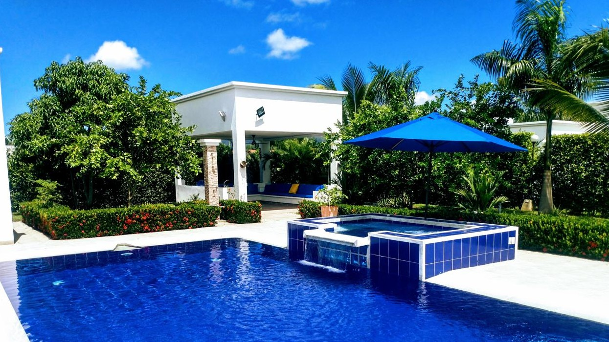

Several people have asked us about the gift list, we don't have one, as the best gift you can do is to join us at our wedding. But if you really want to pampers us we will have a designated box at the venue for your convenience and for the ones who prefer bank transfer here are the details
La Hora Loca is a wedding tradition in Colombia, usually toward the middle or end of the night, it introduces a radical change of atmosphere. Traditionally it's a carnival-style party but anyone does whatever they want, and that's what we are doing :) So expect something different from your regular parties.
For our guests traveling from afar: Carmen de Apicalá is a little town about 130 km south of Bogotá. With temperatures hovering around 29°C year-round, it's one of Colombia's favourite spots to do absolutely nothing productive. The venue, Conjunto El Imperio, is a countryside estate nestled among mountains and lush greenery. Dress accordingly! (yes, that means swimsuit and sunscreen).
If you're driving from Bogotá, it's a straightforward route: Bogotá → Melgar → Carmen de Apicalá.
No car? No problem. The shuttle will be leaving from Bogotá at 11am
Cra. 19a #79-50, Chapinero (Across from Bodegon del Chef)
https://maps.app.goo.gl/3GF7CLynNGnSbRAt6
Please plan to arrive 15 minutes early.
And for those returning to Bogotá on Monday the 30th, you will be dropped off at the same location.
El Imperio has hundreds of rental villa to chose from, right on-site. Once you RSVP, we’ll happily help you find an accommodation within walking distance of the party. We want hang out with you all weekend. Having everyone in the same place is our dream. We chose this location because Juli’s family has a special connection with this place, her family has had summer houses there for a long time and spend most of their weekends there. It's kind of the Duran village.
Dress code: Tropical chic, make sure its breathable. We're outdoors, it's hot, it's humid, and we want you looking fabulous (not melting). Our recommendation: Linen, cotton or any light weight fabrics. Honestly, the default outfit around here is a swimsuit, but it's a wedding so we had to draw the line somewhere. You wont need a jacket.